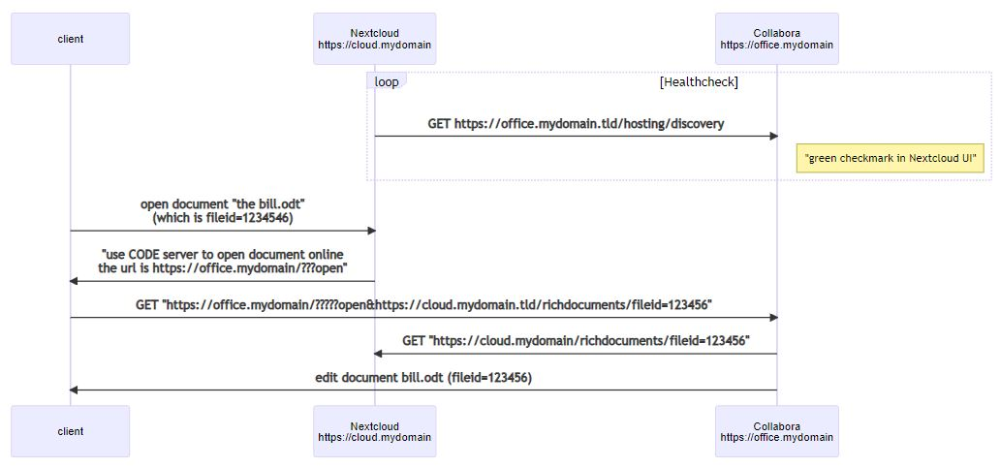

Задача следующая:
На входе Nginx Proxy Manager (NPM), должен получать сертификаты от Let's Encrypt.
Здесь важно что обработка ssl происходит на NPM, что значительно разгружает машину и ускоряет ответ.
Тут первая странность - я не могу пробросить стандартные порты 80 и 443. Если что то за ними стоит то пакеты снаружи приходят,
но соедиенение не устанавливается.
При этом NPM через 80 порт получает сертификаты. Это тема дальнейшего исследования.
Возможно, виноват роутер. Но маловероятно.
Все разворачиваем в докере
Контейнер NPM будет работать с базой в нутри на sqlite. Обычно везде предлагается MySQL, но у нас маленький пул адресов.
environment:
DB_SQLITE_FILE: "/data/npm.sqlite"
Контейнер NextCloud связан с db MySQL в отдельном контейнере.
И с Redis для кеширования. Долно ускорять работу, пока не настраивал.
подробне здесь
Контейнер Collabora
Все три контейнера работают в одной подсети, наружу проброшены только порты 80,81,443 от NPM. Все обращения внцтри идут через внешний домен
либо внутри docker по имени контейнера
Настройка NPM:


В общем то больше настраивать нечего.
Nextcloud разворачивается из контейнера просто.
Дальше надо настроить /data/config/config.php
'overwritehost' => 'nextcloud.techpolis.biz:8443',
'overwriteprotocol' => 'https',
Это важно из за того что порт не стандартный. Подмена протокола на https может здесь и не указываться, ее сделает NPM. Но это не точно.
более подробно здесь:
Еще есть опция
'trusted_domains' =>.
array (
0 => '192.168.0.18',
1 => 'nextcloud.techpolis.biz:8443',
2 => '172.18.0.3',
3 => 'nginx-proxy-manager-app',
4 => 'nextcloud-app',
5 => '172.18.0.5',
6 => 'nextcloud.techpolis.biz',
),
В теории обращения с дургих доменов должны блокироваться. Но по факту можно оставить пустым.
Я только один раз вылетел на сообщение о попытке доступ с недоверенного домена, но не смог воспроизвести.
Взаимодействие с collabora.
Вот хорошая картинка

только в нашем случае клиент - это NPM, все что справа происходит в локалке, здесь обойдемся без HTTPS. А наружу NPM должен
все завернуть с шифрованием под сертификат от Let's Encrypt
Вот здесь про настройку с терминированием ssl на NPM
Основное
In coolwsd.xml the corresponding setting is ssl.enable=false and ssl.termination=true.
В самом конфиге это выглядит так
<enable default="true" desc="Controls whether SSL encryption between coolwsd and the network is enabled (do not disable for production deployment). If default is false, must first be compiled with SSL support to enable." type="bool">false</enable>
<!-- SSL off-load can be done in a proxy, if so disable SSL, and enable termination below in production -->
<termination default="true" desc="Connection via proxy where coolwsd acts as working via https, but actually uses http." type="bool">true</termination>
Опция из окружения в docker
DONT_GEN_SSL_CERT: 1
DONT_GEN_SSL_CERT Если эта переменная окружения установлена (не ""), то скрипт запуска не будет генерировать новый сертификат SSL,
подписанный фиктивным CA.
Это полезно, если вы по какой-то причине хотите использовать свой собственный сертификат SSL.
Критически ВАЖНО
Через переменные окружения надо задать прпавильный подстановочный путь для сервера. Если бы порт был стандартный то это бы работало автоматом.
server_name: collabora.techpolis.biz:8443
Сюда же можно воткнуть
extra_params=--o:ssl.enable=false --o:ssl.termination=true
что бы не править конфиг
В целом по диагностике связки collabora <-> nextcloud
https://help.nextcloud.com/t/collabora-integration-guide/151879